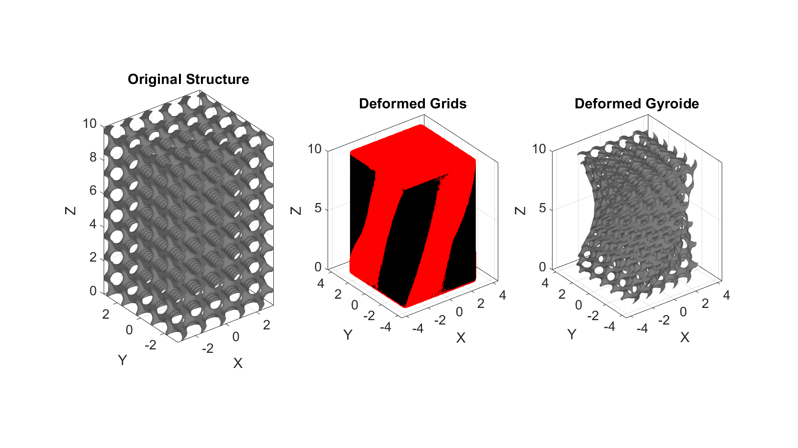

DEMO_0011_nonUniform_Deformation_TPMS
This is a demo for:
- Building geometry for an arbitrary non-uniform deformation matrix applied on gyroid structure.
This demo contains:
- Case-1: Gyroid lattice under twist deformation.
- Case-2: Gyroid lattice under rotation deformation.
Contents
Name
License: to license
Author: Mahtab Vafaee, mahtab.vafaee@gmail.com
Change log: 2023/11/15 MV Created 2024/02/2 MV Edited ----------------------------------------------------------------------
clear; close all; clc;
Plot settings
cMap=jet(250); faceAlpha1=1; faceAlpha2=0.65; edgeColor1='none'; edgeColor2='none'; fontSize=20; pColors=gjet(6);
Control parameters
n= 100; % resolution boxDim = [1, 1, 2]; % dimenasion rInner = 2; bendAngle = pi/2; barHeight = bendAngle*rInner; l=0.9;% levleset
Create an origiional grid
DefType='Twist'; % Select between 'Twist' & 'Rotate' switch DefType case 'Rotate' xRange = linspace(-pi,0,boxDim(1,1)*n)-rInner; yRange = linspace(0,2*pi,boxDim(1,2)*n); zRange = linspace(0,barHeight,boxDim(1,3)*n); case 'Twist' xRange = linspace(-pi,pi,boxDim(1,1)*n); yRange = linspace(-pi,pi,boxDim(1,1)*n); zRange = linspace(0,10,boxDim(1,1)*n); end [X,Y,Z]=meshgrid(xRange,yRange,zRange);
Applying deformation
%Deformation matrix a=linspace(0,bendAngle,size(Z,3)); Xp=X; Yp=Y; Zp=Z; switch DefType case 'Rotate' for q=1:1:size(Z,3) R = euler2DCM([0 a(q) 0]); x = X(:,:,q); y = Y(:,:,q); z = zeros(size(x)); v = [x(:) y(:) z(:)]; % vp = v*R; vp = (R*v')'; xp = reshape(vp(:,1),size(x)); yp = reshape(vp(:,2),size(x)); zp = reshape(vp(:,3),size(x)); Xp(:,:,q)=xp; Yp(:,:,q)=yp; Zp(:,:,q)=zp; end case 'Twist' for q=1:1:size(Z,3) R = euler2DCM([0 0 a(q)]); x = X(:,:,q); y = Y(:,:,q); z = Z(:,:,q); v = [x(:) y(:) z(:)]; % vp = v*R; vp = (R*v')'; xp = reshape(vp(:,1),size(x)); yp = reshape(vp(:,2),size(x)); zp = reshape(vp(:,3),size(x)); Xp(:,:,q)=xp; Yp(:,:,q)=yp; Zp(:,:,q)=zp; end end
Create deformed grid
Vo = [X(:) Y(:) Z(:)]; %Origional grids Vp = [Xp(:) Yp(:) Zp(:)]; %Deformed grids
Evaluate triply periodic function
% calculate the grid value to create gyroid field freq1=5; %period number S=(sin(freq1.*X).*cos(freq1.*Y))+... (sin(freq1.*Y).*cos(freq1.*Z))+... (cos(freq1.*X).*sin(freq1.*Z)); % Construct deformed iso-surface Sn=S; [Fi,Vi] = isosurface(Xp,Yp,Zp,Sn,l); [Fc,Vc] = isocaps(Xp,Yp,Zp,Sn,l); [F,V] = joinElementSets({Fi,Fc},{Vi,Vc}); [F,V] = mergeVertices(F,V); F=fliplr(F); % Construct origional iso-surface [Fi,Vi] = isosurface(X,Y,Z,Sn,l); [Fc,Vc] = isocaps(X,Y,Z,Sn,l); [Fj,Vj] = joinElementSets({Fi,Fc},{Vi,Vc}); [Fj,Vj] = mergeVertices(Fj,Vj); Fj=fliplr(Fj);
Visualize deformed surface
cFigure; subplot(1,3,1);hold on; title('Original Structure','FontSize',fontSize); gpatch(Fj,Vj,'kw','none',1); axisGeom(gca, fontSize); camlight headlight; hp1=subplot(1,3,2);hold on; title('Deformed Grids','FontSize',fontSize); plotV(Vo,'k.','MarkerSize',30); plotV(Vp,'r.','MarkerSize',30); axisGeom(gca, fontSize); camlight headlight; hp2=subplot(1,3,3);hold on; title('Deformed Gyroide','FontSize',fontSize); gpatch(F,V,'kw','none',1); axisGeom(gca, fontSize); camlight headlight; drawnow;